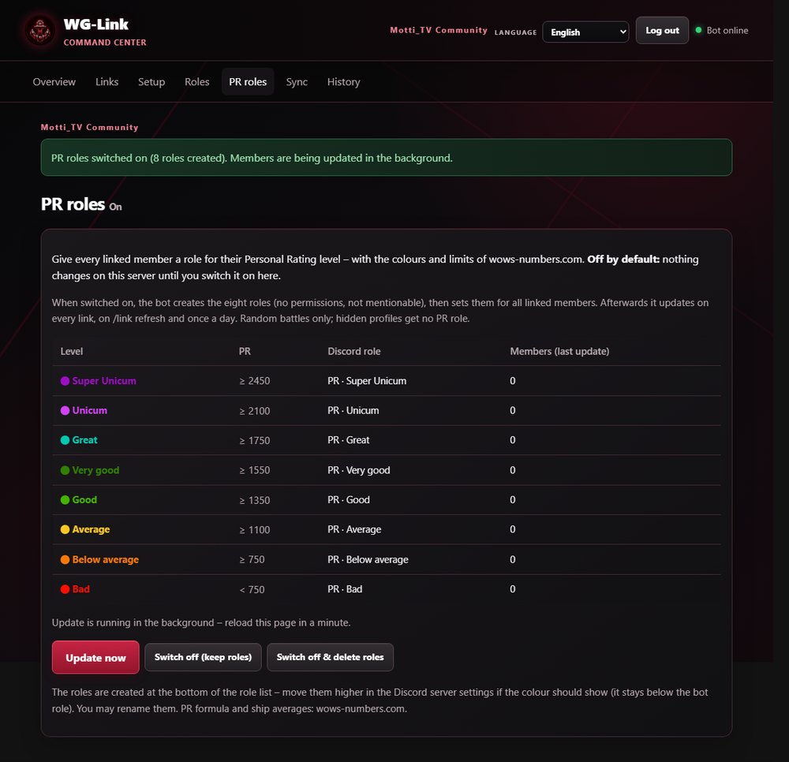

WG-Link
Discord bot that links World of Warships / Wargaming accounts. Setup for server admins, plus the legal documents.
Setup
Set up WG-Link after you invite the bot
Terms of Service
Rules for using the bot
Privacy Policy
Which data is stored
Features
- Link accounts: members link their Wargaming account with the official login – on each server separately.
- Nick, clan and region: the member list shows the in-game name, clan tag and WoWS region.
- Verified role and welcome message for new members.
- Web admin panel: links, nick style, roles, sync and history – or with Discord commands.
- New – PR roles (optional): a role for each member’s Personal Rating level, in the colours of wows-numbers.com. Off by default – nothing changes on a server until an admin switches it on.
